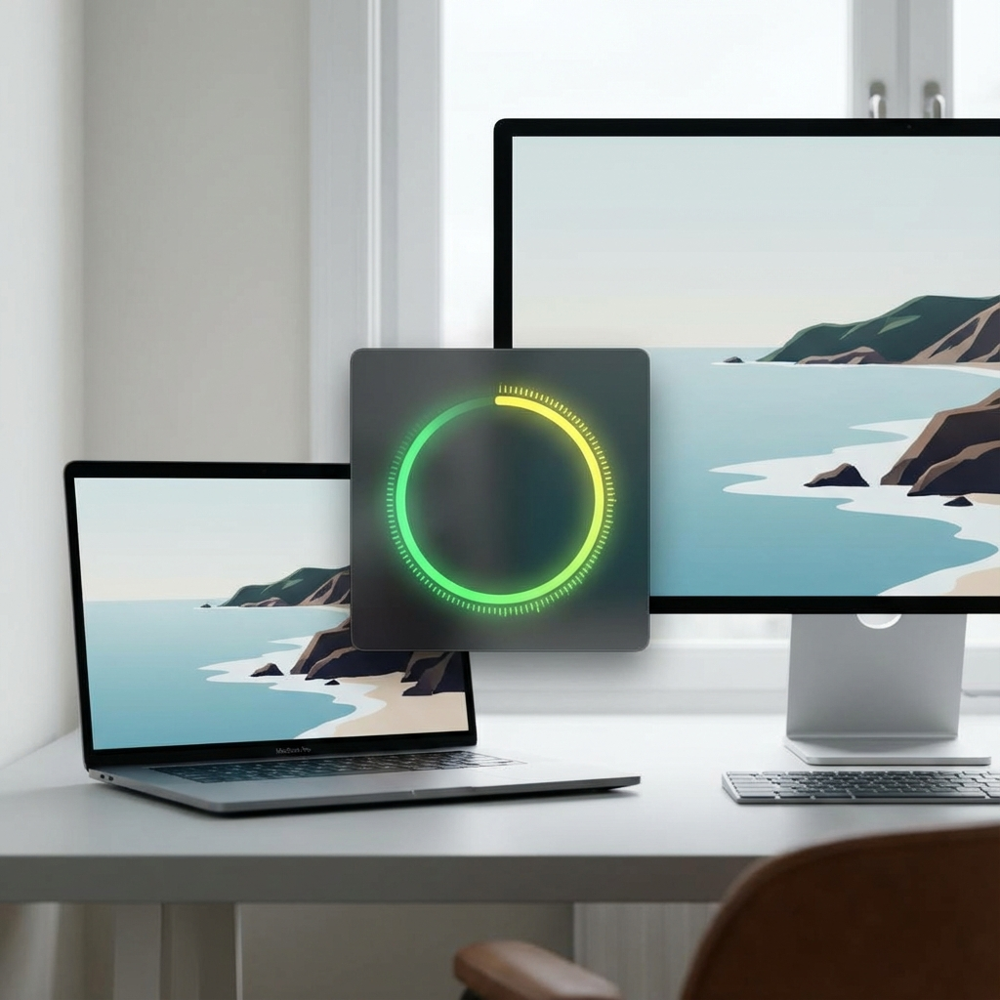

Know when you're yelling.
A beautiful, minimalist sound meter for your Mac that floats on top of your work.
Download for Mac
v1.0.0 • macOS 12+

🤫
Visual Feedback
Instantly see when you're too loud. The circle glows from green to red as volume increases.
📌
Always on Top
Floats above all your windows so you never lose track of your volume during calls.
🔒
Privacy First
Runs completely locally. No audio is ever recorded or sent to the cloud.
Why I built this
"I am constantly told I am talking loudly but don't even realize it."
— Benj Cohen